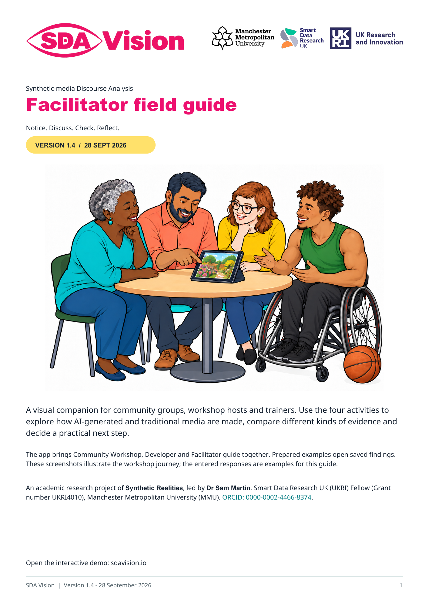

Return to SDA Vision

SDA stands for Synthetic-media Discourse Analysis.
Explore AI-generated and traditional media through model assessments, Content Credentials and supporting file observations. Community Workshop and the illustrated facilitator guide provide space to notice details, compare interpretations and discuss the evidence.
An academic research project of Synthetic Realities, led by Dr Sam Martin, Smart Data Research UK (UKRI) Fellow (Grant number UKRI4010), Manchester Metropolitan University (MMU). ORCID: 0000-0002-4466-8374.
This work was supported by Smart Data Research UK, a UKRI investment; Grant number UKRI4010.
Zenodo drafts for review
Temporary links for the release review. These records are unpublished; sign into the Zenodo account that owns the drafts to view them.
For phone and Amazon Silk checks, also try the interactive demo: navigation, media playback, slide previews and downloads.
Install the software
The SDA Vision source repository and installation guide provide the open-source application under MIT. Install it locally to use your own media and configured provider accounts. This website remains the saved-results demo.
Facilitator guide

Explore the facilitator guide: who it is for, how to use it and previews of all four activities: Notice, Discuss, Check and Reflect. Download the complete six-page Version 1.4 PDF for discussion prompts, current interface screenshots and guidance for your session.
Explore the examples
Choose from ten prepared examples, each with recorded Claude, OpenAI and Gemini assessments. The PDF and presentation use four sampled images each. Animated video plays in both Community Workshop and Developer and has recorded findings for four sampled still frames, with local soundtrack inspection; the podcast’s text assessment covers the first 12,000 of 25,985 transcript characters (about 46%). Its Sound tab includes a separate Google Gemini description of the first 20 seconds of audio. AI-origin detection from the sound itself is outside this workflow. Each report retains its analysis date and check coverage. Ratings are not calibrated probabilities.
Compare the findings, explore the relationship graph and download reports or session notes. The graph shows analysis relationships and image similarities. Distribution history: not assessed. Example headlines and diagrams support critical discussion; they are not clinical guidance or evidence that a study exists.
Your demo session
The opening community table scene is a practice example for learning Notice, Discuss, Check and Reflect. Participants share their first impressions before the source record and saved Claude, OpenAI and Gemini findings appear at Check. The Start here menu offers ten further examples. In Check and Reflect, each recorded reading includes expandable key evidence. The collapsed “About this file” section below the table explains embedded creation labels in plain language. Developer retains the technical file and analysis details, with “What the file records” immediately above the session downloads.
This website uses prepared media and saved results. Visitor uploads and fresh analysis-provider calls are outside this demo profile. Pasted Second Opinion replies and workshop responses stay in browser memory and are cleared when changing item, resetting, reloading or closing the page. Download your session notes to retain a copy. Display preferences are stored locally in this browser.
External links open the selected service. You choose and attach any material there, under that service's account settings and terms. GitHub Pages hosts this website and records visitor IP addresses for security; GitHub’s privacy terms apply.
Credits and licences
The code licence covers project code. Media, fonts and dependencies retain their separate terms.
Development and testing
This public research preview has automated local checks. Phone and TV feedback informs the layout, alongside automated checks and desktop browser checks at narrow and wide screen sizes. The researcher completed phone and Amazon Silk TV checks on 28 September. The latest batch and citation display revision has additional desktop and phone-width browser checks; projector and native presentation-software rehearsals remain separate. The separate Conference profile supports presenter-operated live analyses of prepared examples.
Website copy revision: public-source-2026-09-28.1. The prepared website and public software source have separate repositories. The original development repository remains private. The approved software and facilitator guide have separate Zenodo drafts awaiting publication. Reserved software DOI: 10.5281/zenodo.23008103; registration occurs on publication.